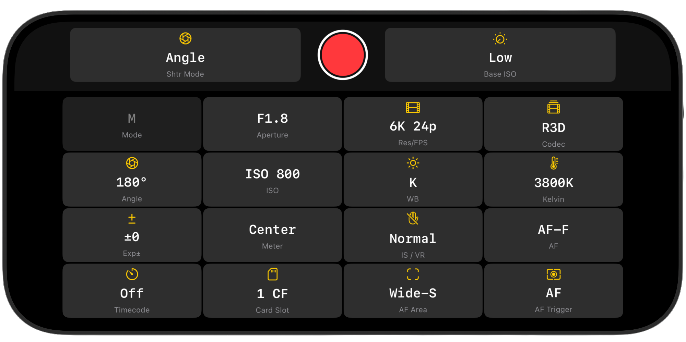
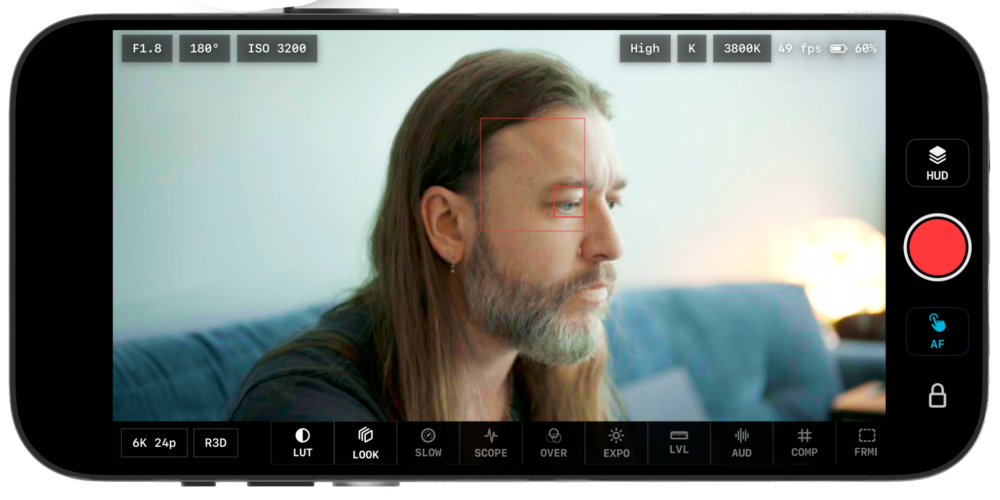
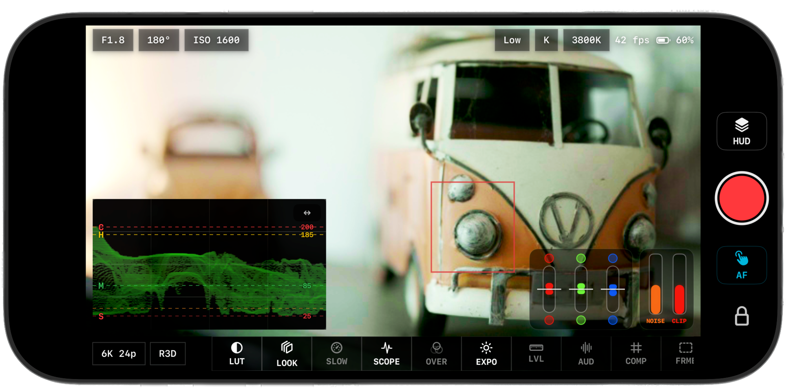
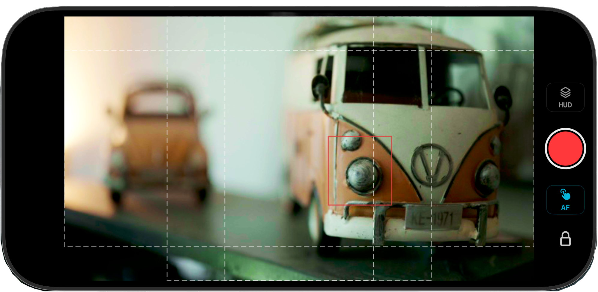
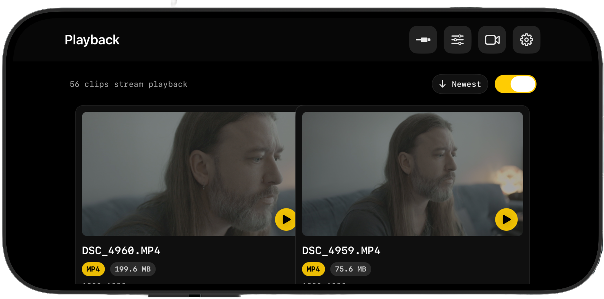

Tune the stream
Adjust preview size and compression so USB, router Wi-Fi, or AP Direct can favor speed, clarity, or stability depending on the set.
The Advanced section is where iOS, iPadOS, and Android operators tune live view, save working layouts, control the exposure pipeline, manage playback cache, and capture the logs that make tricky USB or Wi-Fi issues easier to solve.

Advanced is a working layer: tune the stream, shape the control surface, and collect diagnostics without leaving the app.
What It Is
Most shoots do not need every Advanced control. When conditions change, it gives you practical levers for bandwidth, visibility, framing, review, and support.
Adjust preview size and compression so USB, router Wi-Fi, or AP Direct can favor speed, clarity, or stability depending on the set.
Dial live-view UI scale, manage presets, and keep your preferred monitoring layout ready for handheld, tripod, gimbal, or client-monitor work.
Use USB checks, connection logs, packet logs, poll captures, and property dumps when a camera or device needs deeper troubleshooting.
Preview & Transport
Preview controls are the first place to go when a setup is technically connected but the live view needs a different balance. USB can usually handle higher preview settings. Router Wi-Fi depends on the network. AP Direct is useful in the field, but often benefits from leaner settings.

Use higher quality when the link is strong. If AP Direct gets choppy, reduce preview size or increase compression before changing the whole setup.
Exposure Pipeline
Advanced exposure options are about trust. A LUT can make a monitoring image easier to judge, but exposure tools often need to read the camera signal before that look is applied. The pre-LUT exposure toggle lets you choose which behavior fits the job.

Exposure confidence stays explicit. Advanced lets the operator decide whether the tools evaluate the signal before or after the selected monitoring look.
Guides & Presets
Advanced frame-guide controls are for productions that need more than one crop in mind. A vertical delivery, a 2.39 extraction, a square social cut, and a clean action-safe area can all require different visual pressure on the same live image.

Framing can be layered. Use built-in ratios, custom aspect guides, composition guides, matte opacity, and desqueeze settings as a reusable camera-day preset.
Advanced Map
Use Advanced when you need to tune, preserve, inspect, or reset a part of the operator workflow.
These settings tune the live-view stream itself. They are especially helpful when a camera is connected but the preview feels heavy, delayed, or unstable on a specific transport.
These keep the app comfortable on different devices and rig positions. Save a clean monitoring setup once, then return to it when the shoot changes pace.
Playback cache settings are there for review sessions. Clear the cache when a camera card changes, when thumbnails feel stale, or when you want a fresh playback scan.
Diagnostics are for support, beta testing, and stubborn connection problems. They expose what the app is seeing from the camera so a failed connection can become a fixable report.
Function Reference
Simple functions stay simple. The controls that affect image quality, connection behavior, or support logs get the extra context operators actually need.
These settings change what the live-view experience feels like before you touch deeper diagnostics.
These controls define how the monitor image is interpreted and how much guide information appears on top of it.
These controls keep camera-card review quick while still giving operators a clean reset when media changes.
These tools are intentionally plain. Their job is to turn a confusing failure into data that can be reproduced, filtered, and fixed.
iOS & Android
Advanced tools serve the same operator workflow on iPhone, iPad, and Android, but each platform has its own permission prompts, USB behavior, and network details.
On Apple devices, Advanced helps make the most of USB-C, Local Network discovery, iPad layouts, and permission-sensitive camera control.
On Android, Advanced is especially useful because device USB behavior, cable quality, permissions, and network warnings can vary more from phone to phone.
Playback & Review
ZR Ctl playback scans the camera card, filters for playable clips, loads thumbnails, and streams supported MP4/MOV media for review. Advanced cache controls give you a way to reset that playback state when the camera card changes or when you want a clean scan.

Playback stays practical. Cache controls support faster review while still giving operators a clean reset when the media state changes.
When To Use It
Advanced is most useful when you are preparing a setup, responding to a rough connection, or capturing evidence for support.
Connect the camera, choose the transport, tune preview quality, set UI scale, configure guides, then save the layout as a preset for that rig.
Lower preview image size, increase compression, move closer in AP Direct, or switch to USB/router Wi-Fi before tearing down the camera profile.
Reproduce the issue, open Advanced, capture the relevant USB, connection, packet, poll, or property data, then send the logs with device and firmware notes.
Advanced is easiest after the camera and device are speaking the same transport. Start with USB, Wi-Fi Search, or AP Direct setup, then tune from here.